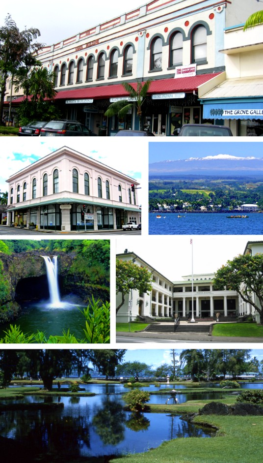

Hilo
Place: Hilo, Hawaiʻi Island
Type: Town / district / cultural center
Story it tells: A rain-fed coastal town shaped by rivers, tsunamis, plantation-era migration, and the cultural identity of East Hawaiʻi.

Hilo is often translated as “to twist,” a meaning that may refer to braided currents, twisting surf, or the movement of water along Hilo Bay. Originally, the name described a much larger district along the eastern coast of Hawaiʻi Island, centered around Hilo Bay and the Wailuku and Wailoa rivers. With abundant rainfall, fertile land, and steady freshwater sources, Hilo became one of the island’s major areas of settlement and agriculture.
Oral traditions and archaeological evidence suggest people were living in the Hilo region by around 1100 AD. Communities developed along rivers and shorelines that provided both transportation and resources. The district later became divided into North and South Hilo, though the broader name still reflects the historical importance of East Hawaiʻi as a connected region rather than simply the modern town itself.
Western visitors began documenting Hilo in the early 19th century. When missionary William Ellis visited in 1823, the principal settlement was located at Waiākea along the southern portion of Hilo Bay. Missionaries later established churches and schools in the district, including Haili Church, while sugar plantations throughout East Hawaiʻi brought large numbers of immigrant laborers from Japan, China, Portugal, the Philippines, and elsewhere. These plantation-era migrations helped shape Hilo into one of Hawaiʻi’s most culturally layered communities.
Unlike the resort-centered development that came to define parts of Kona and Waikīkī, Hilo retained much of its identity as a working town tied to agriculture, education, government, and local culture. Downtown Hilo still reflects this history through its older storefronts, bayfront layout, and slower pace. Heavy rainfall, frequent clouds, and the nearby slopes of Mauna Kea and Mauna Loa give the region a distinctly different atmosphere from the drier western side of Hawaiʻi Island.
Hilo’s history has also been repeatedly shaped by tsunamis. In 1946, a massive tsunami generated by an earthquake near the Aleutian Islands devastated much of the bayfront, killing dozens in Hilo alone while also causing widespread destruction throughout the islands, particularly at Laupāhoehoe. Another destructive tsunami struck in 1960 following a powerful earthquake in Chile. Afterward, many low-lying waterfront neighborhoods were converted into parks and memorial spaces rather than rebuilt, permanently reshaping Hilo’s relationship with the ocean.
Today, Hilo remains one of Hawaiʻi Island’s major cultural centers. The city is home to the University of Hawaiʻi at Hilo, the ʻImiloa Astronomy Center, and the Merrie Monarch Festival, widely regarded as the world’s premier hula competition and celebration. Visitors often drive through Hilo on their way to Hawaiʻi Volcanoes National Park, but the town itself remains deeply connected to East Hawaiʻi’s rivers, rainfall, multicultural history, and local identity.